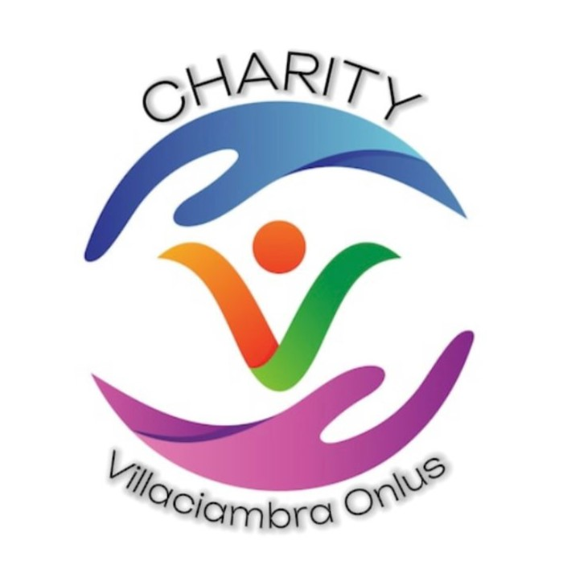

Chi siamo
L'ORGANIZZAZIONE di Volontariato VILLACIAMBRA (O.N.L.U.S.) con sede in Piazza Parrocchia 13 - 90046 VILLACIMBRA MONREALE da anni si occupa di sostegno alle famiglie meno abbienti. Siamo consociati con il Banco delle Opere di Carità ed assistiamo 490 persone.Cod. fisc. 97158710828 associazione. Indicando il seguente codice fiscale “97158710828” della O.N.L.U.S. Villaciambra, sulla dichiarazione dei redditi e' possibile donare alla predetta associazione il 5 per mille del IRPEF. Se non indichi nulla lo Stato si trattiene queste somme. Ci occupiamo di volontariato a sostegno delle persone bisognose. Grazie per il vostro sostegno e per vostro aiuto. Condividete bisogno. Presidente Associazione Villaciambra Onlus. Giuseppe Mortillaro